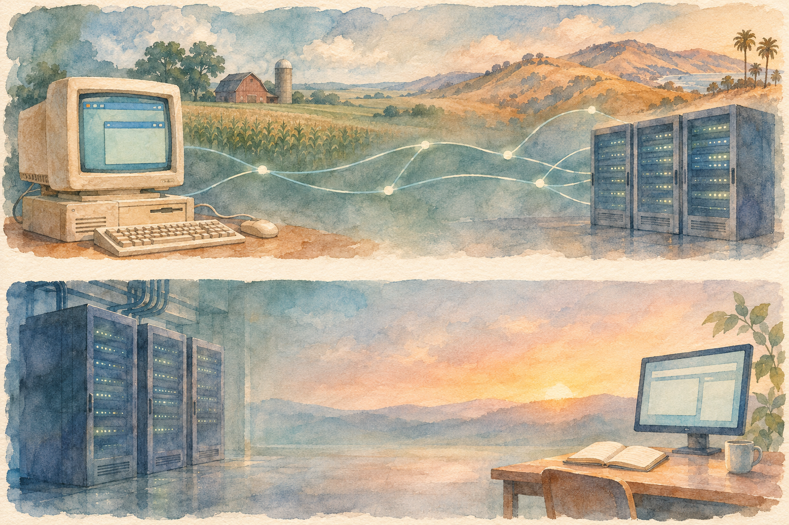

Acquired · Spring 2021 · Part I
Andreessen Horowitz
Part I
Before the firm
A free browser, a brutal platform war, and a cloud business rebuilt from its own tools. The experiences that made Marc Andreessen and Ben Horowitz want to become a different kind of investor.

Chapter 01 · 1966–early 1990s
Two ways out
Before there was a firm, there were two very different routes into computing.
Ben Horowitz was born in London in 1966 to American parents living inside the counterculture. His father, David Horowitz, worked with Bertrand Russell and became a prominent New Left intellectual. In 1968, the family moved to Berkeley when David became co-editor of Ramparts. Young Ben grew up close to the Black Panthers; the family attended their Son of Man Temple in Oakland. This was a childhood in which ideas, institutions, and personal relationships carried unusually high stakes.
The hosts linger on a tragedy from that childhood. In 1974, David introduced Ramparts bookkeeper Betty Van Patter to the Panthers. She subsequently disappeared and was found dead. The crime was never solved and no one was charged. David and others believed the Panthers had ordered her killing; the episode does not establish that allegation as fact. David later moved sharply to the political right. The hosts describe a lasting relationship between father and son despite their ideological differences, while treating Ben’s desire to leave his father’s shadow as an interpretation of his path.
Computers offered Ben another revolution. He studied computer science at Columbia, earned a master’s at UCLA, interned at Silicon Graphics, and then joined it. After a short stay and an unsuccessful startup spun out of SGI, he moved to Lotus. There he encountered a new browser coming out of Illinois: Mosaic.
Marc Andreessen’s route began far from Berkeley. Raised in small-town New Lisbon, Wisconsin, with a father in seed sales and a mother in customer service at Lands’ End, he wanted to get out. He chose the University of Illinois for an affordable, strong computer-science education and the chance to work on consequential projects. Its National Center for Supercomputing Applications supplied that opening. At $6.25 an hour, the future internet celebrity was still a student employee without institutional authority.
Chapter 02 · 1993–1994
Let the riffraff in
A research network becomes something ordinary people can point and click.
At NCSA, Andreessen encountered the World Wide Web protocols developed by Tim Berners-Lee at CERN. The hosts contrast an academic environment concerned with sharing research with Marc’s ambition to make the web graphical and easy for everyone. He recruited full-time NCSA employee Eric Bina to build a browser. The episode’s quoted Andreessen describes resistance from technical people who thought making the internet accessible would pollute it. He and Bina disagreed.
Mosaic’s 1993 release was free to download, but its source code remained NCSA’s property. That distinction matters twice in this story: first when Andreessen leaves, and later when the code reaches Microsoft. Ben Gilbert recounts a rough adoption curve from a dozen users in February 1993 to a thousand within weeks, ten thousand by spring, and a million by early 1994. These are the episode’s historical figures, offered to convey the extraordinary response on a very small early web.
The choice was far from obvious. Much of the industry imagined the information superhighway arriving through television, cable systems, and controlled services. A freely available browser on ordinary computers pointed elsewhere. Gilbert identifies a recurring Andreessen instinct: take something esoteric and restricted, make it broadly accessible, and work out the economics afterward.
Yet the person who had helped create this growth did not initially see a company waiting to happen. Andreessen graduated in 1993 and moved to California, feeling that the great personal-computer companies had already been built. He took a job at Enterprise Integration Technologies. Meanwhile Mosaic became famous. The hosts preserve a disagreement about its origin: Andreessen portrayed it as self-organized work; NCSA treated it as an official project whose code and public representation belonged to the institution.
Chapter 03 · 1994
The console that arrived too late
Netscape begins with a different idea failing to happen.
Jim Clark had left Silicon Graphics after conflicts with its board. He had money, a grievance about the financing that had diluted his ownership, and a restriction on recruiting his old colleagues. He needed a new team. Mosaic brought Andreessen to his attention, and the two met for an early breakfast.
Their first plan was not to commercialize a browser. Clark wanted an online service for Nintendo’s forthcoming N64, drawing on SGI’s involvement with the console. A living-room machine could have been the gateway to the information superhighway everyone was discussing. But the console slipped by a year, negotiations did not produce a business, and both men wanted to get moving. Andreessen later said that, had Nintendo shipped a year earlier, they probably would have pursued that opportunity instead.
In a subsequent brainstorming session, Andreessen proposed rebuilding and commercializing a browser with his former Illinois colleagues. They incorporated Mosaic Communications in April 1994. NCSA objected to the name and threatened legal action; the company became Netscape Communications. Its internal browser code name, Mozilla, meant Mosaic Killer. The new company would compete with the work its founders had just left behind, using newly written code.
Clark supplied $4 million of his own money. With the venture attracting attention and requiring more capital, he approached investors despite his earlier frustrations. John Doerr at Kleiner Perkins outbid Clark’s old connections at NEA, investing $5 million for a quarter of the company—a $20 million post-money valuation. The episode’s eventual venture-capital story thus begins with founders who knew both the utility of institutional money and the sting of giving up ownership.
Chapter 04 · 1994–August 1995
The browser draws the crowd
Ben’s less glamorous server division supplies the business behind the sensation.
At Lotus, Horowitz had been watching Mosaic. When Netscape formed, he used a connection to get an interview and joined to lead its enterprise web-server products. A browser could display pages, but businesses also needed software to run commercial websites. The browser attracted users; the server division could sell companies the tools to serve those users.
Gilbert describes a powerful alignment: distribute the consumer product widely, then charge businesses for compatible tools. The hosts contrast this with the contemporary packaged-software habit of selling consumers a box and a license. Mosaic’s academic, freely downloadable beginnings helped make the browser’s route different. The result was an audience that gave Netscape influence over what businesses bought to participate in the web.
By August 1995, only sixteen months after incorporation, the hosts put Netscape’s browser share at about 80 percent. Clark pushed for an IPO. Jim Barksdale, an experienced executive from FedEx and the cellular industry, had come in as CEO. Morgan Stanley’s Frank Quattrone and analyst Mary Meeker helped take the company public into demand unlike anything the bankers had priced before.
The conversation initially muddles an intermediate proposed price, then resolves the final offering price at $28 a share. Trading opened at $75 and closed at $58, for roughly a $3 billion market capitalization. Charles Schwab had even added a phone prompt for callers interested in the Netscape IPO. The hosts call it the cultural moment that opened the gates to the dot-com boom.
Their enthusiasm does not depend on pretending Netscape was profitable. It was not. But they insist there was a real business beneath the speculation: $17 million of revenue in the first half of 1995, $85 million for the full year, then $346 million in 1996 and $534 million in 1997. Horowitz’s server operation was growing at a pace Gilbert describes as revenue doubling quarter over quarter. That visceral experience would become a reference point for both men long after the market turned against them.
Chapter 05 · 1995–1999
Free, and already installed
Microsoft changes the competition from product choice to distribution.
Andreessen publicly suggested Netscape could reduce Windows to a collection of imperfect device drivers. Microsoft’s response was considerably more practical. Bill Gates’s May 1995 Internet Tidal Wave memo made the internet a strategic priority. The hosts emphasize that even Microsoft had previously been drawn toward interactive television rather than the low-end web now taking off.
Microsoft also had a head start hidden inside the story. Thomas Reardon had licensed browser technology from Spyglass, the commercial route for NCSA’s Mosaic code. Mosaic had been free to download without being open source; its institutional ownership now enabled a competitor’s browser. Under a revenue-sharing license, giving the browser away produced a dispute with Spyglass. The episode puts Microsoft’s eventual payment at $8 million.
Internet Explorer first accompanied a Windows 95 add-on and then became bundled with Windows itself. Netscape faced a browser available for free through an operating system already on almost every PC. Its server products became much more important, even as they had to work with Microsoft’s browser. The earlier consumer-to-enterprise advantage was becoming harder to defend.
The pressure also tested the partnership. In March 1996, Horowitz’s group was preparing a server-product announcement when Andreessen disclosed the strategy early in an interview. Ben sent him a terse complaint. Marc replied, copying Clark and Barksdale, with an angry attack on server product management and a warning that the company was being killed. The email coincided with the famous Time cover depicting a barefoot Andreessen on a throne. The hosts use the juxtaposition to distinguish celebrity and technical vision from the work of running a company.
Netscape continued to generate substantial revenue, but its stock never regained the peak it had reached as Microsoft’s bundling strategy became clear. In 1999 it sold to AOL for $4.2 billion in stock. The hosts caution that this headline value does not tell us what shareholders ultimately realized. Gilbert offers possible AOL motives—valuable technology and people, leverage against Microsoft, or Netscape’s web traffic—rather than claiming a single established explanation. Netscape had also open-sourced its browser code in 1998, before the sale, beginning the Mozilla continuation the hosts discuss.
Chapter 06 · 1999–2000
Rent the electricity
A job inside AOL reveals a new company, and a demanding balance sheet.
Andreessen became AOL’s CTO in a forward-looking role with little day-to-day operating responsibility and left in September 1999. Horowitz became a vice president in ecommerce. His former server team helped retailers and consumer brands build the infrastructure needed to sell through AOL. These companies wanted online businesses, not expertise in servers and data centers. Ben saw the same need extending to their applications on the open web.
With Tim Howes and Sik Rhee, he left to build Loudcloud: infrastructure that customers could rent rather than construct and operate themselves. Andreessen understood it immediately. At the launch, he used an electricity analogy: producing your own power does not improve the beer you brew, so connect to a grid. Likewise, running servers need not be the source of an application company’s advantage. Marc became chairman and committed $6 million, while Ben ran the company.
They found a sympathetic investor in Benchmark’s Andy Rachleff, an infrastructure specialist whom Horowitz called a gentleman. But the broader financing relationship became painful. David Rosenthal repeatedly qualifies his reconstruction: the order of meetings, how the partnership approved the deal, and the reported confrontation are not a fully established inside account. According to that reconstruction, Benchmark agreed to invest $15 million at a $45 million pre-money valuation and then objected to Andreessen’s additional $6 million.
The ownership arithmetic explains the objection. With only Benchmark’s money, $15 million divided by $60 million gives 25 percent. Add Marc’s investment to the same pre-money price and the denominator becomes $66 million; Benchmark’s stake falls to about 22.7 percent. Marc invested anyway. The hosts’ point is that a negotiation over a few ownership points also affected a relationship that could span decades.
In the hosts’ reported version of a subsequent partnership meeting, Benchmark’s David Beirne challenged Ben in front of his management team about when he would hire a real CEO. The public undermining mattered as much as the question. Ben and Marc remained close to Rachleff, but the episode traces some of their later desire to be the opposite of conventional venture capital to this experience. It is an origin story the hosts interpret, with its reconstruction left visible.
Chapter 07 · 2000–2001
Orders disappear; obligations remain
Loudcloud cannot finance its future like a pure software company.
The money initially kept coming. Two months after the first round, Loudcloud raised another $45 million, and the press treated it as Andreessen’s next act. But it had to lease data-center space and buy, rack, and operate servers before customers could use them. Growth meant committing capital forward. This was a very different cash burden from distributing another copy of software.
When the dot-com bubble began deflating in March 2000, customer orders evaporated while contracts for infrastructure remained. Many prospective customers were startups whose financing was disappearing too. The founders searched widely for capital. In an anecdote from Horowitz’s account, board member Bill Campbell relayed that even SoftBank’s Masayoshi Son thought the proposal implausible. The episode describes the eventual $120 million Series C, at a $700 million post-money valuation, as a near escape rather than renewed security.
By early 2001 that money was running out as well. With private investors unwilling to finance the burn, an IPO became the last available financing route. Loudcloud went public in March at $6 a share, surrounded by the description IPO from Hell. Soon afterward it cut guidance, its stock fell to $2, and its underwriting banks dropped research coverage. The hosts speculate about the banks’ reasons; the observable result in their story is that a newly public company was losing both customers and financial credibility.
Gilbert explains the trap as a supplier of picks and shovels watching the gold rush end. Cloud infrastructure could be useful and still arrive at a disastrous time. Having identified a future need did not eliminate the present cost of machines, contractual commitments, or customers going out of business. To survive, Horowitz would have to change what the company was.
Chapter 08 · 2002–2007
Keep the software; rebuild the company
An apparent liquidation contains the ingredients of a second start.
In 2002, Horowitz arranged to sell Loudcloud’s infrastructure business to Electronic Data Systems for $63.5 million. Most employees were laid off. The surviving company kept a tool it had built to provision and manage its own servers. EDS wanted that automation as a product and agreed to become a $20 million-a-year customer. This was an annual customer contract, alongside the sale proceeds, rather than another lump of cash already in the bank.
The tool was a long way from a finished enterprise product. Called the Jive, it lacked a user interface and used an internal theme unsuitable for customers. The team had to turn its own working machinery into something another company could buy and use. Loudcloud became Opsware, rebuilding as a data-center automation software company rather than continuing to own the infrastructure it automated.
The public market put the stock at 35 cents, a market value of about $28 million. Rosenthal contrasts that with the $63.5 million sale proceeds and the annual EDS contract. In the passage he quotes, Horowitz remembers fifty strong engineers and rejects the idea that the market price was an efficient discovery of the truth. It was, he argued, a rapid convergence on a conclusion that could be wrong. That is Ben’s retrospective judgment, not a claim that every distressed company is undervalued.
The reversal took years of work. Horowitz’s account of laying off colleagues and getting the remaining team to recommit includes a simple answer about how he endured: a lot of crying. In 2007, HP bought Opsware for $14.25 a share, or $1.6 billion. The hosts treat the outcome as a win without smoothing away the human cost or pretending the original infrastructure plan had worked.
For Rosenthal, the experience helps explain the future investors’ willingness to act against a consensus. The market for internet and software could keep growing even after financial markets had written a company off. He and Gilbert frame survival as a way of remaining around long enough for timing and luck to improve. They also explicitly say being early is a bad position; the story is about getting through it, not celebrating the hardship for its own sake.
Chapter 09 · Through 2008
The investors they had wanted
Personal history turns into a stance toward technical founders.
Another Loudcloud board member supplied a different institutional model: Michael Ovitz, founder of Creative Artists Agency and briefly a Disney executive. After Disney, he became involved in internet investing and joined the board. The hosts identify this relationship as the seed of the ambition to build a CAA for venture capital. Part I establishes the connection; it leaves the firm’s eventual operating design for the next episode.
The Benchmark encounter also becomes a principle: technical founders should have the resources to become capable CEOs rather than automatically surrender their companies to professional replacements. Gilbert cites a 2003 interview in which Andreessen answered absolutely when asked whether a founding technologist should run a mature company. Rosenthal then adds an incentive argument. Publicly backing founders helps win their trust and their deals. He separates that commercial advantage from settling every question about which CEO is right for a particular business.
The hosts even qualify the later firm’s operator credentials. The rhetoric that its general partners had all been CEOs was not literally true of several early partners; strong operating leadership and a CEO title were different things. Marc’s own best-known successes in this account came as a technical co-founder, chairman, adviser, or investor. Ning, his service for communities to create their own social networks, was an exception where he had been CEO. After the Opsware sale he stepped back there and brought in Jason Rosenthal, another Netscape and Opsware alumnus, to run it.
With money from the HP sale, Marc and Ben became exceptionally active angel investors together. The episode counts 45 companies, including Facebook, Twitter, Zynga, LinkedIn, Digg, AngelList, and Foursquare. Their blogs made their thinking public as they embraced the participatory web they were financing. Against the lingering caution after the first dot-com collapse, they were putting personal capital behind another generation of founders.
The Facebook episode made that stance concrete. In the hosts’ attributed telling, Andreessen supported Mark Zuckerberg’s refusal of Yahoo’s $1 billion offer when other advisers wanted a sale. They quote Andreessen describing the intense pressure on the young founder and their bond during it, and Zuckerberg describing Marc as a sounding board on management and building a technology company. Andreessen joined Facebook’s board in 2008. The important link in this episode is between advice, trust, and willingness to build something larger.
Chapter 10 · Around 2008 · closing discussion
“I was thinking the same thing”
Part I ends with an idea, before the firm’s history begins.
While Horowitz was still at HP, Sequoia’s Doug Leone called to ask how he had turned such a troubled company into a billion-dollar outcome. The hosts admire the appetite to learn and interpret the conversation as recruitment, while acknowledging that it could have led to either a partnership role or funding for another startup. They wonder how differently the venture landscape might have developed had Ben joined an existing firm.
Rosenthal then tells the decisive exchange with an explicit warning: he does not know the exact timeline and is hypothesizing and dramatizing. In his telling, Ben finishes the call and messages Marc that they should start a venture-capital firm. Marc replies that he was thinking the same thing. The hosts imagine this happening sometime in 2008. They do not establish the precise date or sequence, and the financial crisis between the idea and the eventual 2009 launch makes the timing consequential.
Their closing analysis returns to the choices behind that idea. Rosenthal calls it courageous to forgo an established platform and put their money to work while the world appeared to be falling apart. He immediately qualifies the word: both men were wealthy and never needed to work again. The risk was a choice about committing capital and effort, not a threat to their own subsistence. The large money-management institution visible to listeners in 2021 should not be projected backward onto its beginnings.
Gilbert emphasizes timing and luck. A one-year console delay had helped redirect the founders toward Netscape; Andreessen had been present at the opening of the web. Talent mattered, but it operated in circumstances the protagonists did not control. Gilbert also argues that Mosaic’s explosive adoption gave them a physical memory of what extraordinary product-market fit felt like. That experience set a demanding standard for later companies.
Rosenthal adds the other half: they knew what total failure felt like too. Having experienced both extremes helped them distinguish success from failure and ask what came from skill and what came from luck. This is the episode’s final analytical point, rather than a grading of the mature venture firm. The hosts expressly defer that grading to Part II.
The conversation winds down with David’s recommendation of Resonant Arc’s long-form video-game story discussions and Ben’s recommendation of The Elephant in the Brain. Then they return to their community, the new season, and the prospect of telling the firm’s story next time. This companion stops with them: at the threshold of Andreessen Horowitz, with the experiences that made its founders want to create it.
Source & scope
This companion follows the complete official transcript of Acquired: Andreessen Horowitz Part I, including the hosts’ closing discussion and outro. The transcript is available in the episode page’s Transcript section. Accessed November 14, 2026. It uses the conversation as its content boundary; the firm’s subsequent history belongs to Part II.
The official page lists July 27, 2021 and a duration of 2 hours 7 minutes. Its original numbered season is Season 9; this library labels it Spring 2021 by release date. The page’s explicitly labeled corrections section was empty when checked. The transcript has no reliable listening cues, so these are reading chapters, not audio timestamps.
Reported dialogue, market figures, anecdotes, and interpretations retain the episode’s perspective and qualifications. Watercolor scenes are original conceptual illustrations, not exact historical depictions. The financing and transaction interludes are simplified explanations of the hosts’ stated numbers.